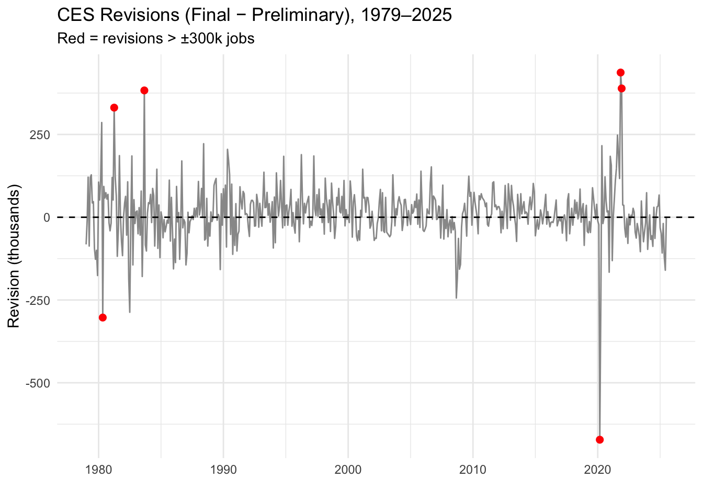

This mini-project examines U.S. seasonally-adjusted total non-farm payroll employment from the Bureau of Labor Statistics (BLS) Current Employment Statistics (CES) survey—the headline “jobs added” figure central to political discourse.
Data sources include:
Final CES Estimates
CES Revisions
The goal is to fact-check claims about CES revisions and the August 2025 firing of BLS Commissioner Erika McEntarfer by two politicians/commentators, rated via PolitiFact’s scale (“True” to “Pants on Fire”). Each fact-check incorporates ≥3 EDA statistics, ≥2 visualizations, and 1 hypothesis test.
Data Acquisition
Task 1: Download CES Total Nonfarm Payroll
Final CES Estimates
First, we build the POST request, then parse HTML and find the table of interest. Collect the data, and transform the acquired data. Check the data structure as follow:
Code
# ---- Step 1: Build the POST request ----req <-request("https://data.bls.gov/pdq/SurveyOutputServlet") |>req_method("POST") |>req_body_form(series_id ="CES0000000001",years_option ="specific_years",from_year ="1979",to_year ="2025",file_format ="text",output_type ="column",tref ="false" )resp <- req |>req_perform()# ---- Step 2: Parse HTML ----html <- resp |>resp_body_html()# ---- Find the table ----tbl <- html |>html_element("#table0") |>html_table()# ---- Inspect structure ----#head(tbl) #check top records#tail(tbl) #check last records # ---- transform the data ----nonfarm_employment_data <- tbl |>mutate(# Extract month number from Period column (drops the "M")month =str_remove(Period, "M") |>as.integer(),# Create date using Year + month + day = 1date =make_date(year =as.integer(Year), month = month, day =1),# Convert Value to numericlevel =as.numeric(Value) ) |>select(date, level) |>arrange(date) |>drop_na() #remove null
Warning: There were 3 warnings in `mutate()`.
The first warning was:
ℹ In argument: `month = as.integer(str_remove(Period, "M"))`.
Caused by warning:
! NAs introduced by coercion
ℹ Run `dplyr::last_dplyr_warnings()` to see the 2 remaining warnings.
Code
# ---- inspect transformed data ----nonfarm_employment_data
#tail(nonfarm_employment_data) #dropped the (P : preliminary)
Task 2: Download CES Revisions Tables
CES Revisions First, we request to the page, parse the table of interest, transform the data. Examine the data as follow:
Code
fx_ces_rev <-function(year){#function here (can loop through years anchor)url <-paste0("https://www.bls.gov/web/empsit/cesnaicsrev.htm#", year)# 1. Request the page -------------------------------------------------------resp <-request(url) %>%#req_url_path_append("#2024") %>% # optional: jump to anchorreq_headers(`User-Agent`="Mozilla/5.0 (Macintosh; Intel Mac OS X 10.15; rv:143.0) Gecko/20100101 Firefox/143.0") %>%req_error(is_error = \(resp) FALSE) %>%req_perform()# Check status resp %>%resp_check_status()# 2. Parse the specific table we want ---------------------------------------raw_table <- resp %>%resp_body_html() %>%html_element(paste0("table#",year)) %>%# the exact id from your original HTMLhtml_table(header =FALSE, fill =TRUE)yearly_ces_rev<- raw_table %>%slice(4:15) %>%# keep only Jan to Dec (rows 4–15)select(X3, X5, X8) %>%# X3 = 1st (original), X5 = 3rd (final), X8 = total revisionset_names(c("original", "final", "revision")) %>%mutate(across(everything(), as.numeric),Date =seq(as.Date(paste0(year, "-01-01")), as.Date(paste0(year, "-12-01")), by ="1 month")) %>%select(Date, original, final, revision)return(yearly_ces_rev)}# --------------------------------------------------------------# Apply to all years 1979–2025 and combine# --------------------------------------------------------------all_revisions <-map_dfr(1979:2025, fx_ces_rev)
Warning: There was 1 warning in `mutate()`.
ℹ In argument: `across(everything(), as.numeric)`.
Caused by warning:
! NAs introduced by coercion
Code
#Inspect the output #Check NA column #found 2003 Mar and Apr have NA/ 2025 Aug (not yet update data due to shut down of govt)all_revisions %>%filter(if_any(everything(), is.na)) %>%mutate(which_na =apply(is.na(.), 1, which))
# A tibble: 7 × 5
Date original final revision which_na
<date> <dbl> <dbl> <dbl> <list>
1 2003-03-01 -108 0 NA <int [1]>
2 2003-04-01 -48 0 NA <int [1]>
3 2025-08-01 22 NA NA <int [2]>
4 2025-09-01 119 NA NA <int [2]>
5 2025-10-01 NA NA NA <int [3]>
6 2025-11-01 NA NA NA <int [3]>
7 2025-12-01 NA NA NA <int [3]>
Task 3: Data Exploration and Visualization
Data Exploration
By joining the two tables, then compute 6 statistics about CES over the past 45 years
Code
#Joining the two tablesdf <- nonfarm_employment_data %>%left_join(all_revisions, join_by("date"=="Date"))#Categorizing date by decadedf <- df %>%drop_na(original, final, revision) %>%rename(Date = date, employment = level) %>%mutate(year =year(Date),month =month(Date, label =TRUE),decade =case_when( year <1990~"1980s", year <2000~"1990s", year <2010~"2000s", year <2020~"2010s",TRUE~"2020s" ) %>%factor(levels =c("1980s","1990s","2000s","2010s","2020s")),# Calculate the statistics abs_revision =abs(revision),rev_pct_final = revision / final *100,abs_rev_pct_final =abs(revision) / final *100,rev_pct_total = revision / employment *100,abs_rev_pct_total =abs(revision) / employment *100 ) %>%arrange(Date)# This line fixes the CRAN mirror error forever in Quartooptions(repos ="https://cran.r-project.org")# Install knitr (and kableExtra if you want pretty tables) — only runs onceif (!require("knitr")) install.packages("knitr")
Loading required package: knitr
Code
if (!require("kableExtra")) install.packages("kableExtra")
Loading required package: kableExtra
Attaching package: 'kableExtra'
The following object is masked from 'package:dplyr':
group_rows
Warning: Returning more (or less) than 1 row per `summarise()` group was deprecated in
dplyr 1.1.0.
ℹ Please use `reframe()` instead.
ℹ When switching from `summarise()` to `reframe()`, remember that `reframe()`
always returns an ungrouped data frame and adjust accordingly.
CES Revisions: Key Statistics (1979–2025)
Statistic
Value
Period
1979 – July 2025
Total months
557
Mean revision (k)
11
Mean |revision| (k)
57
Largest upward
+437k
Largest downward
-672k
Avg |rev| / total emp (%)
0.048
% upward revisions
56.7
Visualization
Time series of revisions
Code
### 1. Time series of revisionsggplot(df, aes(x = Date, y = revision)) +geom_line(color ="gray60") +geom_point(data =~filter(., abs_revision >300), color ="red", size =2) +geom_hline(yintercept =0, linetype ="dashed") +labs(title ="CES Revisions (Final − Preliminary), 1979–2025",subtitle ="Red = revisions > ±300k jobs",y ="Revision (thousands)", x ="") +theme_minimal()

Accuracy trend (% of total employment)
Code
# Plot 2 – Accuracy trend (% of total employment)ggplot(df, aes(Date, abs_rev_pct_total)) +geom_line(color ="steelblue", alpha =0.7) +geom_smooth(method ="loess", span =0.3, color ="red", se =FALSE) +scale_y_continuous(labels =function(x) paste0(x, "%")) +labs(title ="Revision Size as % of Total Nonfarm Employment",subtitle ="Huge improvement since the 1990s",x ="", y ="|Revision| / Total Employment (%)") +theme_minimal()
Has the fraction of negative revisions increased post-2000?
To test if the fraction of negative revisions has increased post-2000, below perform a two-sample binomial proportion test using the prop_test() function with a one-sided alternative hypothesis.
This test compares the proportion of negative revisions in the period after 2000 to the proportion in the period before 2000.
Code
if (!require("infer")) install.packages("infer")
Loading required package: infer
Code
library(infer)
Code
ces_revisions_test <- df |># 1. Create the response variable (Categorical: TRUE if the revision is negative)mutate(is_negative = revision <0,# 2. Create the explanatory/grouping variable (Categorical)is_post_2000 = year >=2000) |># Ensure complete cases for the test variablesdrop_na(is_negative, is_post_2000)# Perform the one-sided Binomial Proportion Testrevision_prop_test <- ces_revisions_test |>prop_test(is_negative ~ is_post_2000,# Specify the one-sided alternative: TRUE > FALSEalternative ="greater",# Set the order to compare Post-2000 (TRUE) vs. Pre-2000 (FALSE)order =c("TRUE", "FALSE"))revision_prop_test
The test is testing if the proportion of negative revisions in the later group (Post-2000) is greater than the proportion in the earlier group (Pre-2000).
Null Hypothesis: The proportion of negative revisions is the same or smaller post-2000 than pre-2000.
Alternative Hypothesis: The proportion of negative revisions has increased post-2000.
Interpretation:
The P-value is 0.1864999, which is larger than 0.05, fail to reject the null hypothesis.
Conclusion:
The data does not support the claim that the fraction of negative revisions has significantly increased post-2000.
Has the fraction of revisions of more than 1% increased post-2020?
Below is a two-sample binomial proportion test to test if the fraction has increased.
Code
ces_revisions_test <- df |># 1. Create the response variable (Categorical: TRUE if magnitude > 1%)mutate(is_large_revision =abs(revision) >1,# 2. Create the explanatory/grouping variable (Categorical)is_post_2020 = year >=2020) |># Ensure complete cases for the test variablesdrop_na(is_large_revision, is_post_2020)# Perform the one-sided Binomial Proportion Testrevision_prop_test <- ces_revisions_test |>prop_test(is_large_revision ~ is_post_2020,# Specify the alternative hypothesis: Post-2020 (TRUE) > Pre-2020 (FALSE)alternative ="greater",order =c("TRUE", "FALSE"))
Warning in stats::prop.test(x = sum_table, alternative = alternative,
conf.level = conf_level, : Chi-squared approximation may be incorrect
Two-Sample Binomial Proportion Test Hypotheses (One-Sided)
Null Hypothesis: The proportion of large revisions is the same or smaller post-2020 than pre-2020.
Alternative Hypothesis: The proportion of large revisions (those with magnitude of |revision| > 1) has increased post-2020.
Interpretation: The P-value is 0.5, which is larger than 0.05, fail to reject null hypothesis
Conclusion: The observed increase is not statistically significant.
Is the average revision significantly different from zero?
Below is a one-sample t-test to determine if the average revision is significantly different from zero.
Code
ces_revisions_clean <- df |>drop_na(revision) # Perform the one-sample t-test comparing the mean of 'revision' to 0revision_t_test <- ces_revisions_clean |>t_test(response = revision, mu =0) # mu = 0 sets the null mean for the test
Null Hypothesis: The true average revision (\(\mu\)) is equal to zero.
Alternative Hypothesis: The true average revision (\(\mu\)) is significantly different from zero (it’s either positive or negative)
Interpretation:
The P-value is 0.0015342, which is smaller than 0.05, reject null hypothesis.
Conclusion:
The average revision is statistically significantly different from zero.
Has the average revision increased post-2020?
Below is a two-sample t-test to determine if the average revision has increased post-2020. This test compares the mean of the revisions made in the period after 2020 to the mean of the revisions made before 2020.
Code
ces_revisions_test <- df |># 1. Create the explanatory/grouping variable (Categorical)mutate(is_post_2020 = year >=2020) |># Ensure complete cases for the testdrop_na(revision) # Perform the one-sided t-testrevision_t_test <- ces_revisions_test |>t_test(revision ~ is_post_2020,# Specify the one-sided alternativealternative ="greater",# Set the order so TRUE (Post-2020) is compared to FALSE (Pre-2020)order =c("TRUE", "FALSE"))revision_t_test
Interpretation: The p-value is 0.7565518, which is greater than 0.05, fail to reject the null hypothesis.
Conclusion: The data does not support the claim that the average revision has significantly increased post-2020.
Are revisions larger when the underlying change in CES level is larger?
Correlation analysis is used to assess if revisions are larger when the underlying change in the CES level is larger.
In this case, the two variables are:
Revision Magnitude: The absolute size of the revision
CES Change Magnitude: The absolute size of the underlying change in the preliminary CES employment level.
Code
ces_revisions_magnitudes <- df |># Ensure data is ordered by Datearrange(Date) |># Calculate the actual month-over-month change in the CES levelmutate(ces_change = employment -lag(employment) ) |># 2. Calculate the absolute magnitudes for both variablesmutate(# The magnitude (absolute value) of the revisionrevision_abs =abs(revision),# The magnitude (absolute value) of the underlying CES changeces_change_abs =abs(ces_change) ) |># Remove NA values that result from the lag function and any existing missing datadrop_na(revision_abs, ces_change_abs)# 3. Perform the Pearson correlation test (base R)correlation_test <-cor.test(x = ces_revisions_magnitudes$revision_abs,y = ces_revisions_magnitudes$ces_change_abs,method ="pearson"# Tests for a linear relationship)# Print the result to get the correlation coefficient and p-valuecorrelation_test
Pearson's product-moment correlation
data: ces_revisions_magnitudes$revision_abs and ces_revisions_magnitudes$ces_change_abs
t = 4.5961, df = 554, p-value = 5.336e-06
alternative hypothesis: true correlation is not equal to 0
95 percent confidence interval:
0.1102530 0.2704926
sample estimates:
cor
0.1916496
Interpretation P-value < 0.05, reject the null hypothesis that the true correlation is equal to zero.r~-0.19 indicate the relationship is weak
Conclusion There is strong statistical evidence that a linear correlation exists between the magnitude of the underlying CES change and the magnitude of the revision. The two variables tend to increase together, but the relationship is not strong or highly predictive.
Fact Check BLS Revisions
Task 5: Fact Checks of Claims about BLS
Fact Check # 1:
Kevin Hassett, White House National Economic Council director — argued the large benchmark revision (e.g., 818k) and the timing show a “partisan pattern” and are evidence that BLS revisions are suspicious / warrant a “fresh set of eyes”
Source:
Summary of the claim:
Hassett highlighted the 818k annual revision and argued that the timing (the announcement coming when it did) and the size of revisions create reasonable suspicion of partisan patterning in BLS reporting, supporting a leadership change.
Fact-check statistics:
Key numbers
Mean revision (signed): 11k (so long-run average revision is small, positive).
Mean |revision|: 57k (typical magnitude of revisions is tens of thousands).
% upward revisions: 56.7% (slight majority of months are revised upward).
Visual evidence:
Time series of revisions (1979–2025) — shows a few very large revisions but also long stretches of small revisions; large downward benchmark revisions are visible among other big events.
Bias by year / % months revised upward plot (Task 3 plot 3) — shows yearly fraction revised upward; does not show a clear, consistent, increasing partisan skew across decades.
Hypothesis tests
Has the fraction of negative revisions increased post-2000? prop test p = 0.1865 (fail to reject). No statistically significant increase in negative revisions post-2000.
Has the fraction of very large revisions (>1% of employment) increased post-2020? prop test p = 0.5 (fail to reject). No evidence the proportion of large revisions increased significantly post-2020.
Correlation test: revision magnitude vs underlying CES change magnitude → cor = 0.19165, p ≈ 5.33e-06: a small but statistically significant positive correlation (bigger underlying CES changes tend to be associated with larger revisions, but the relationship is weak).
Conclusion:
Politifact-style rating for Hassett’s overall claim is mostly false Hassett cites genuine large revisions (true), but the statistical analysis shows no robust evidence of a systematic partisan increase in negative revisions or an abnormal pattern after 2020/2000. The existence of big benchmark revisions is real, but the inference that those revisions constitute a partisan pattern (or empirical justification for immediate dismissal) is not supported by the hypothesis tests and the long-run revision patterns.
Fact Check # 2:
Senator Thom Tillis — suggested that the firing was politically motivated, stating: “If she was just fired because the president or whoever decided to fire the director just because they didn’t like the numbers, they ought to grow up.”
Tillis implies the sole reason for Dr. McEntarfer’s firing was the release of politically unfavorable economic data (specifically the weak July job gain of 73,000 and the large downward revisions), rather than legitimate concerns over competence or data integrity.
Fact-check statistics:
Key numbers
On average across ~46 years, the typical revision from preliminary to final is modest (+11 k), though revisions of tens of thousands are routine (mean absolute ~57 k).
Very large revisions (hundreds of thousands) are rare but do occur (largest seen −672k).
Visual evidence:
Time series of revisions (1979–2025) — shows that most monthly revisions cluster around ±100k or less, with occasional large spikes (positive or negative).
Revision as % of total nonfarm employment - shows that revision magnitudes, relative to the size of the labor force, have trended downward over time — meaning that even large revisions are a small fraction of total employment
These visuals illustrate that while revisions are a normal and expected feature of monthly employment data, extreme revisions are rare outliers — not the norm.
Hypothesis tests
One-sample t-test of average signed revision ≠ 0: yielded estimate ≈ +11.2 k, t ≈ 3.18, p ≈ 0.0015 → meaning average revision is statistically different from zero.
Test for an increase in proportion of negative (downward) revisions after 2000 vs before 2000: p ≈ 0.1865 → fail to reject. No statistically significant shift toward downward revisions in recent decades.
Test for increase in large revisions (>1% of employment) after 2020 vs before: p ≈ 0.50 → fail to reject. No evidence large revisions have become more frequent recently.
Interpretation & verdict:
The fact that monthly and benchmark revisions happen (and sometimes are large) is well supported by historical data.
Conclusion:
Politifact-style rating for Tillis’s overall claim is mostly true Tillis’s statement isn’t a definitive empirical claim (“the numbers were fake”), but a normative/political claim — that firing a statistics official solely because of an unfavorable report undermines the integrity of data institutions. Given the evidence from the STA9750 historical analysis and institutional design of the BLS, his concern appears well founded.The data do show that revisions are a normal part of the process (so “numbers revision” itself isn’t proof of manipulation), but that normal revision process doesn’t justify firing a commissioner over a single weak report — doing so risks politicizing data